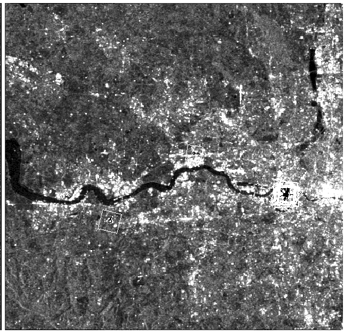

Data Analysis Operator
This plugin implements the extraction of Scale Invariant Feature Transform (SIFT)
features from SAR images and it was ported from
the open source library OpenImaJ.
Scale Invariant Feature Transform (SIFT) is an image descriptor for image-based matching
developed by David Lowe ([1], [2]). This descriptor as well as related image descriptors
are used for a large number of purposes in computer vision related to point matching between
different views of a 3-D scene and view-based object recognition. The SIFT descriptor is invariant
to translations, rotations and scaling transformations in the image domain and robust to moderate
perspective transformations and illumination variations. Experimentally, the SIFT descriptor has
been proven to be very useful in practice for image matching and object recognition under real-world
conditions.
Parameters Used
For most filters, the following parameters should be selected (see Figure 1 for example):
- Source Band: All bands (real or virtual) of the source product. User can select one or more bands
for producing filtered images. If no bands are selected, then by default all bands will be selected.
For complex product, only the intensity band can be selected.

Figure 1. SIFT detected keypoints
[1] Lowe, David G. (1999). "Object recognition from local scale-invariant features". Proceedings
of the International Conference on Computer Vision. 2. pp. 1150–1157. doi:10.1109/ICCV.1999.790410.
[2] David G. Lowe, Distinctive image features from scale-invariant keypoints,
International Journal of Computer Vision, 60, 2 (2004), pp. 91-110. [PDF]